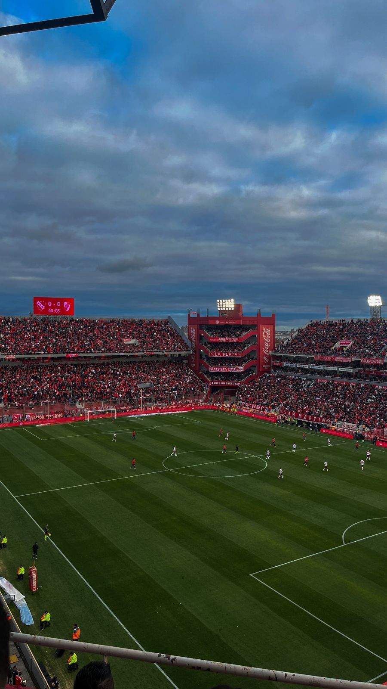

Una pasión, el fútbol

A toda persona algo lo mueve, una pasión, en mi caso es Independiente, desde la cuna hasta el cajón.
Me llamo Tiziano Cristiani, tengo 22 años y nací el 29 de marzo en Avellaneda. Actualmente estudio Ingeniería y trabajo como Analista IT en Allaria.
Me apasiona la tecnología, el fútbol (especialmente Independiente), y me gusta aprender y crear cosas nuevas, como este blog personal.
A toda persona algo lo mueve, una pasión, en mi caso es Independiente, desde la cuna hasta el cajón.
La vida es muy distinta cuando tenes amor puro y verdadero como el de los animales.
Desde que tengo memoria es mi superheroe favorito.
El último viaje tuve la oportunidad de compartirlo con amigos de Mendoza, ojalá volver pronto.
Porque no hay nada mejor que capturar momentos y escenas de manera permanente, a través de la fotografía.